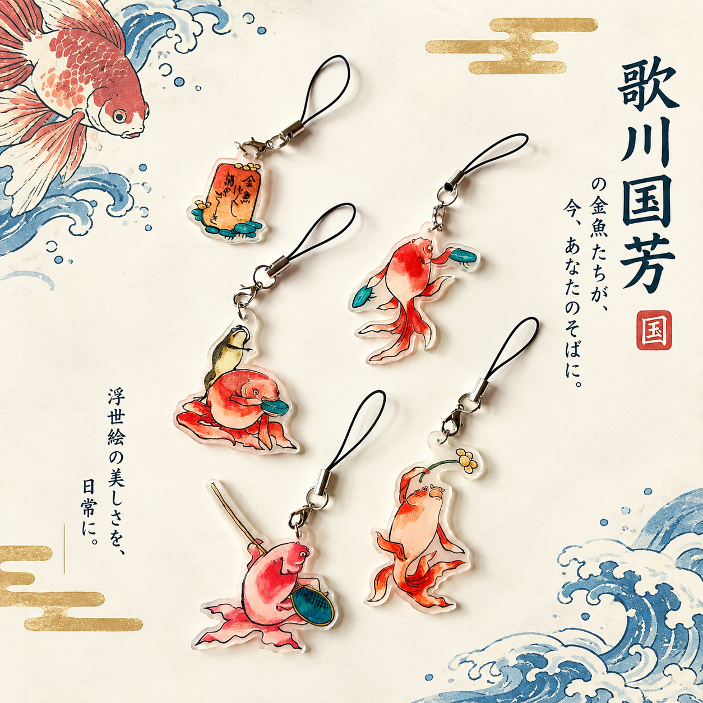
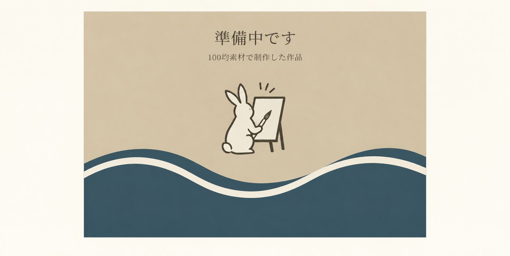

ABOUT THIS PROJECT
「見る・知る・作る・巡る」で、浮世絵がもっと身近になる！
100均からはじまる新プロジェクト
このプロジェクトでは、100円ショップで手に入る身近な素材を使って浮世絵を再現・アレンジします。作品を見るだけでなく、制作過程や裏話、浮世絵の歴史、実際に訪ねられる場所まで紹介。浮世絵を「見る・知る・作る・巡る」体験につなげます。
プロジェクトについて詳しく見る →GALLERY
最新の作品

WORK 002
-
-
WORK 003
-
-